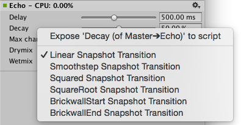

Selecting an AudioGroup in the AudioGroup Hierarchy, the AudioGroup View or the Project window (as a sub-asset) will show the inspectorA Unity window that displays information about the currently selected GameObject, Asset or Project Settings, alowing you to inspect and edit the values. More info
See in Glossary for that AudioGroup.
The inspector for the AudioGroup consists of a number of elements:
At the top of the AudioGroup Inspector there is the name of the AudioGroup, along with with the gear dropdown menu common to all Object Inspectors.
The gear menu contains the following functionality:
When in Playmode within Unity, the Inspector for an AudioGroup includes a button at the top called “Edit in Playmode”. By default, the parameter values of an AudioMixer are not editable in Playmode and are fully controlled by the current snapshot within the game.
Edit in Playmode allows you to override the snapshot system and start making edits to the current snapshot directly during playmode. This is a great way to mix and master a game while playing it in realtime.
At the top of all AudioGroup Inspectors, there is a slider that defines the pitch of playback through that AudioGroup. To change the pitch, either use the slider or enter the pitch manually into the text field to the right.
Every AudioGroup within an AudioMixer has exactly 1 Attenuation Unit.
The Attenuation Unit is where you can apply attenuation / gain to the audio signal passing through the AudioGroup. The attenuation is computed and applied to the signal ‘at the unit’ (not combined with other attenuation settings and applied at the voice source). This allows very complex and interesting setups to be created when combined with Sends / Receives and non linear DSP effects. Attenuation can be applied to –80dB (silence) and gain can be applied to +20dB.
Every Attenuation Unit has a VU meter in the inspector. This meter shows the audio signal levels at that point in the signal chain (just after attenuation is applied). This means that if you have DSP effects or Receives after the Attenuation Unit, the metering information seen in the AudioGroup strip for that AudioGroup will be different to the metering information at the Attenuation Unit. This is a great way to debug the signal chain of an AudioGroup by dragging the Attenuation Unit up and down the processing chain to see the metering at different points.
The VU meter shows both RMS and peak hold values.
Effect Units are general DSP effects that modify the audio signal being played through the AudioGroup, for example Highpass or Reverb. Effect Units can also process side-chain signal information that is sent to it from a Send Unit. The interface for each Effect Unit is different, but for the most part expose a collection of parameters that you can modify to change how the effect is applied to the signal. For example, a Parameter EQ effect has 3 parameters that modify how the signal is processed:
Unity comes with a collection of in-built effects that you can use within an AudioGroup. There is also the ability to create custom DSP effect pluginsA set of code created outside of Unity that creates functionality in Unity. There are two kinds of plugins you can use in Unity: Managed plugins (managed .NET assemblies created with tools like Visual Studio) and Native plugins (platform-specific native code libraries). More info
See in Glossary that can be used within an AudioMixer.
To change the ordering of the effect within the AudioGroup, left click the effect header and drag up or down to place it in a different position.
To remove the effect from the AudioGroup, right click on the effect header and select ‘Remove this effect’.
Sends allow you to diverge the audio signal flow and send a potentially attenuated copy of the signal to be used as a side-chain within another Effect Unit, for example, a side-chain compressor. You can insert Sends anywhere in the signal chain, allowing divergence of signal at any point.
Initially, when Sends are added to an AudioGroup, they do not send to anything, and the Send Level is set to 80dB. To send to another Effect Unit, you must already have an Effect Unit that can accept side-chain signals in the AudioMixer somewhere. Once the destination Effect Unit has been selected, the user needs to increase the Send Level to send signal to the destination.
Receives are the signal sinks of Sends, they simply take the audio signal that is sent to them from Sends and mix it with the current signal passing through their AudioGroup. There are no parameters to a Receive.
Note that if you Solo a Receive unit, this will make the sound stop playing. This is by design.
Duck Volume Units allow you to create side-chain compressionA method of storing data that reduces the amount of storage space it requires. See Texture Compression3D Graphics hardware requires Textures to be compressed in specialised formats which are optimised for fast Texture sampling. More info
See in Glossary, Animation CompressionThe method of compressing animation data to significantly reduce file sizes without causing a noticable reduction in motion quality. Animation compression is a trade off between saving on memory and image quality. More info
See in Glossary, Audio Compression, Build Compression.
See in Glossary from signal sent from Sends. Duck Volume is a great way to control the attenuation of a signal based on audio being played somewhere else in the AudioMixer.
Duck Volume Units can be added like any other Effect Unit and must have signal sent to them from at least one Send to be useful.
Each unit within the AudioGroup Inspector has a number of common features.
Allowing Wet Mixing on a DSP effect allows you to decide how much of the audio signal that is to enter the effect actually is processed by the effect. Enabling Wet Mixing effectively creates a dry channel around the effect. You can then click on the effect slot and drag left and right to increase or decrease the percentage of audio signal that is passed through the DSP effect unit. The rest of the signal is passed through the dry channel. The following diagram illustrates this concept:
Wet mixing is good for when a user wants to control the influence an effect has on the mix and preserve a percentage of the original signal.
Exposed Parameters allow you to bypass the Snapshot system of an AudioMixer and set the value of any parameter within an AudioMixer from script. When an Exposed Parameter is set via script, that parameter is locked to that value and will not change as the the game transitions Snapshots.
Exposing a parameter with an AudioMixer is done in the AudioGroup Inspector. For any parameter shown in the Inspector (including Pitch, Volume, Send Level and Wet Level), you can right click on the name of the Parameter and choose ‘Expose X to script’.
Once a parameter is exposed it will show up in the Exposed Parameter drop down in the top right corner of the AudioMixer Window. Clicking on this drop down will reveal all the Exposed Parameters in the AudioMixer.
When transitioning between Snapshots, by default all transitions are done with linear interpolationThe estimation of values that determine the shape of an animation curve between two keys. More info
See in Glossary from the beginning to target values. In some cases this transition behaviour is not desired however, for example when it it preferable to brick-wall the change at the start or end of the transition.
All of the parameters available within the AudioMixer can have their transition behaviour changed. Transition behaviours are defined per-Snapshot, with the target Snapshot defining the transition behaviour.
To set the transition override for a particular parameter for the current Snapshot, right click on the parameter name and select the required transition type.

The audio mixer assetAny media or data that can be used in your game or project. An asset may come from a file created outside of Unity, such as a 3D model, an audio file or an image. You can also create some asset types in Unity, such as an Animator Controller, an Audio Mixer or a Render Texture. More info
See in Glossary itself has an inspector that allows specifying the overall activation/suspense behavior of the mixer. Being assets, audio mixers are basically activated when any audio sourceA component which plays back an Audio Clip in the scene to an audio listener or through an audio mixer. More info
See in Glossary plays into the mixer and will stay active as long as there is such a driver supplying audio data to the mixer. Since mixers can also be activated by the audio preview button in the scene viewAn interactive view into the world you are creating. You use the Scene View to select and position scenery, characters, cameras, lights, and all other types of Game Object. More info
See in Glossary, the activation behavior is different from that of scene-objects such as MonoBehaviors. Thus, a mixer may be active (and therefore consuming CPU) even in stop mode.
To avoid running out of CPU resources in a project that contains a large number of mixers that are not supposed to be running all at the same time (say, because specific levels use certain specialized mixers), the audio mixers have functionality built-in to put themselves into suspended mode in which all processing stops. To do this in a natural way that doesn’t lead to audible artefacts such as clicks or missing rever/echo tails each mixer uses the following strategy:
As long as any audio source is playing into this mixer or the mixer is receiving audio data from other sub-mixers the mixer will keep itself active. After the last sound source has finished playing, the mixer will wait for a second and then continually use loudness-measurement at its own output do decide if it should suspend itself. This is needed because reverb and echo tails can potentially decay very slowly. The loudness threshold at which the mixer suspends itself is determined by enabling Auto Mixer Suspend and setting the Threshold Volume parameter on the mixer asset’s inspector which is shown then the mixer asset is selected in the project browser (not when selecting a sub-asset like a mixer group or snapshot). The value of –80 dB is chosen as the default and matches the lowest value of the faders in the mixer. In practice it is often possible to set it to a significantly larger value to get quicker deactivation and avoid intermediate CPU spikes that could cause stutter.
Did you find this page useful? Please give it a rating: